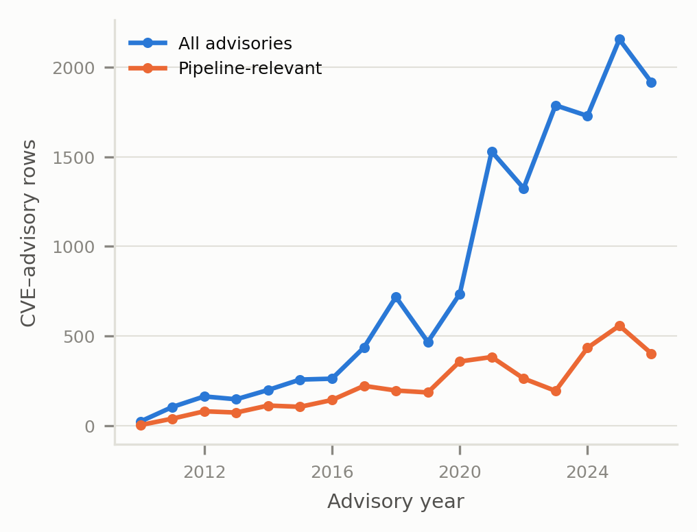
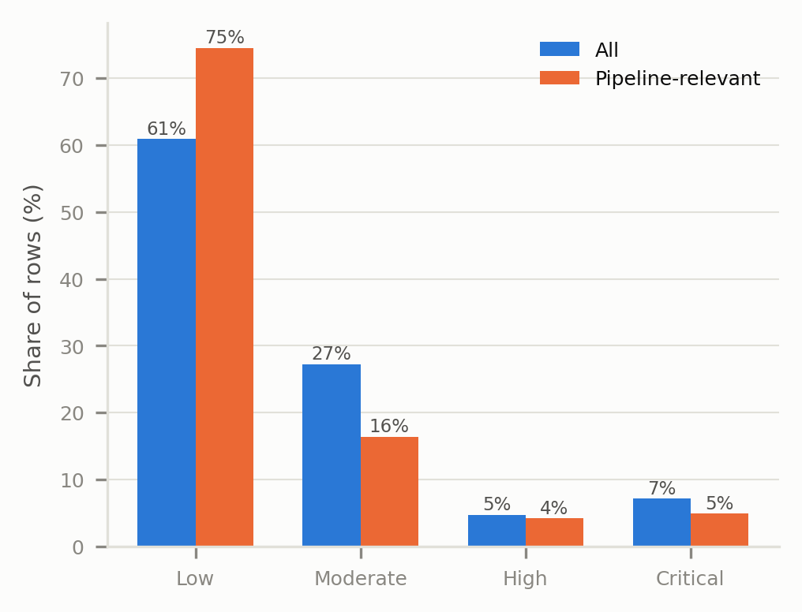

Dataset at a glance
Prioritization results
Distribution
The pipeline-relevant subset


Immediate attention
Top 10 prioritized advisory-CVE rows
| Priority | CVE | Advisory | Vendor / product | KEV | EPSS |
|---|---|---|---|---|---|
| 0.333333 | CVE-2023-44487 | ICSA-24-165-04 | Siemens / ST7 ScadaConnect | Yes | 0.99999 |
| 0.333333 | CVE-2023-38180 | ICSA-24-165-04 | Siemens / ST7 ScadaConnect | Yes | 0.14016 |
| 0.333333 | CVE-2025-14847 | ICSA-26-218-01 | ABB / ABB Ability Zenon | Yes | 0.83218 |
| 0.333333 | CVE-2017-6738 | ICSA-17-208-04 | Rockwell Automation / Allen-Bradley Stratix and ArmorStratix | Yes | 0.10654 |
| 0.333333 | CVE-2017-6736 | ICSA-17-208-04 | Rockwell Automation / Allen-Bradley Stratix and ArmorStratix | Yes | 0.70559 |
| 0.333333 | CVE-2023-44487 | ICSA-25-203-04 | Schneider Electric / EcoStruxure Power Operation | Yes | 0.99999 |
| 0.333333 | CVE-2023-5217 | ICSA-25-203-04 | Schneider Electric / EcoStruxure Power Operation | Yes | 0.49013 |
| 0.333333 | CVE-2017-6743 | ICSA-17-208-04 | Rockwell Automation / Allen-Bradley Stratix and ArmorStratix | Yes | 0.10654 |
| 0.333333 | CVE-2018-0296 | ICSA-18-184-01 | Rockwell Automation / Allen-Bradley Stratix 5950 | Yes | 0.99913 |
| 0.333333 | CVE-2017-6737 | ICSA-17-208-04 | Rockwell Automation / Allen-Bradley Stratix and ArmorStratix | Yes | 0.44325 |
Method
Transparent scoring
Priority score = raw urgency x (1 - overall control reduction). Raw urgency combines known exploitation from CISA KEV or EPSS probability with a no-patch bonus. Control reduction stacks the documented CISA CPG 2.0 and TSA-outcome mappings. Read the project README and inspect the complete generated statistics.